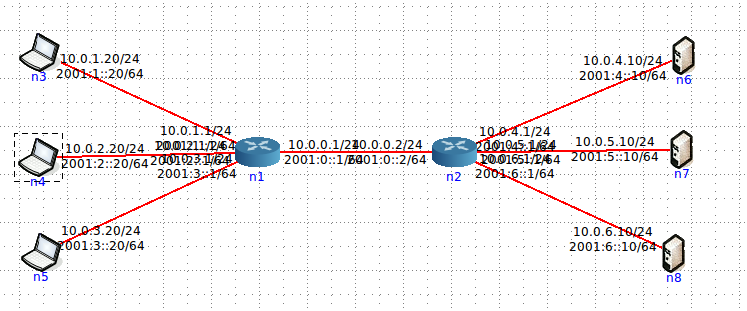

Création d'un réseau IP virtuel
Nous allons effectuer un adressage aliasé de notre topologie exemple. Cela veut dire qu'au dessus de l'adressage automatique en 10.x.x.x géré par CORE, vous allez effectuer un second adressage IPv4 toujours en utilisant la classe C suivante 192.168.x.y/24
Nous allons utiliser la commande ifconfig afin de mettre en place ce nouvel adressage virtuel. Consultez tout d'abord la page de manuel du ifconfig. Nous allons créé un alias d'interface en ajoutant :0 à chaque interface. Par exemple pour une interface eth0 : ifconfig eth0:0 mon_adresse_IP netmask mon_netmask
Attention à ne taper eth0 au lieu de eth0:0, vous supprimeriez alors l'adressage par défaut de CORE.
- Une fois que vous avez tapé cette commande, refaite un ifconfig afin de bien vérifier que l'ajout de l'alias. Vous veriez avoir deux adresses : celle automatique de CORE en 10.x.x.x sur eth0 et la vôtre sur eth0:0.
- Faite cette opération pour l'ensemble du réseau et lancez un ping entre les deux extrémités de votre réseau.
- Ajouter maintenant deux autres machines du côté de la source connectées au même routeur et de façon identique deux autres serveurs du côté de la destination comme illustré ci-dessous :

- Adressez les de façon cohérente. Sur quelle adresse réseau devez-vous les placer ?
- Laissez tourner le ping et effectuez un tcpdump sur un des routeurs. Que remarquez vous pour l'adresse de destination ?
- Consultez la table ARP de votre machine émettrice. Voyez-vous vos nouvelles adresses dans cette table ?
- Qu'en concluez-vous ?